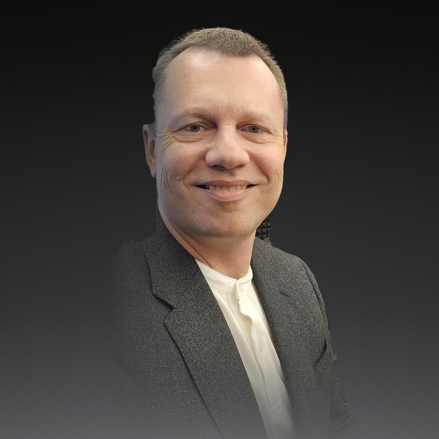
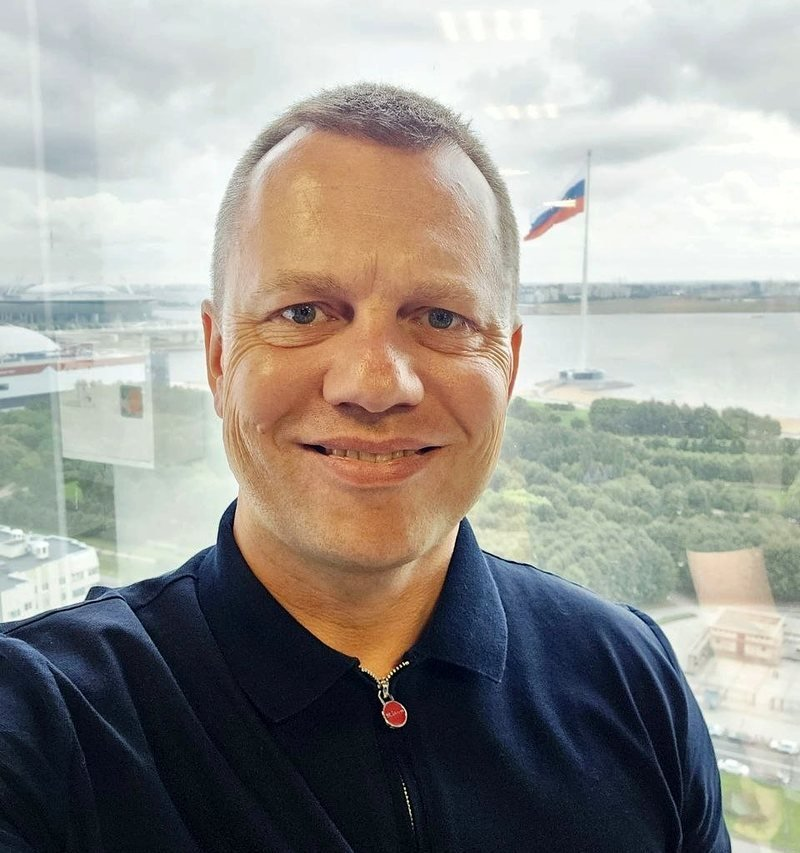

Андрей Фомин
Захожу в компанию на конкретную задачу и отвечаю за результат, а не за должность: антикризис, запуск, интеграция, продажа бизнеса. 22 года в топ-менеджменте международных корпораций.

Сильный руководитель на проект, а не через полгода поиска
Собственнику нужен человек, который уже проходил такую ситуацию десятки раз и готов выйти в понедельник. Фиксируем цель, сроки и KPI до старта, по результату передаю дела преемнику.
С чем работаем
- Убытки растут, прогнозы команды не сбываются
- Компания выросла, а система управления нет
- Прибыль падает, команда блокирует изменения
- Топ ушёл в пятницу, замена нужна с понедельника
- Новый актив, завод или рынок, который надо запустить
Что вы получаете
- Выход на проект за 72 часа вместо 3–6 месяцев поиска
- Цели и KPI, зафиксированные в контракте до старта
- Диагностику и план в первые недели работы
- Преемника и порядок передачи дел в конце проекта

Практик, который ушёл из найма в интерим-проекты
22 года я управлял бизнесом в международных автомобильных корпорациях, затем осознанно ушёл из найма в интерим-проекты. Вёл проекты в России, Словакии, Германии и Сербии.
Основал Ассоциацию Интерим Менеджеров и первую в России Школу интерим-менеджеров. Веду подкаст про интеримов и канал в Telegram.
Об АссоциацииТри уровня работы
Первое лицо
Работаю с собственником или CEO напрямую: задача, ограничения, критерии успеха и честный разговор о том, что реально мешает.
Система управления
Выстраиваю структуру, ответственность и ритм решений, чтобы результат не зависел от одного человека.
Команда топ-менеджеров
Усиливаю команду, при необходимости подключаю экспертов Ассоциации, в конце готовлю преемника.
Чем могу быть полезен
Интерим-управление
Руководство компанией или функцией на срок проекта с ответственностью за KPI.
Подробнее →Антикризис
Стабилизация денег, команды и операционки, когда убытки растут и прогнозы не сбываются.
Подробнее →Запуск и стройка
Новый актив, перенос завода, выход в другие страны: без срыва поставок и раздутого бюджета.
Подробнее →Интеграция и сделки
Интеграция купленного актива и подготовка бизнеса к продаже, которая повышает цену сделки.
Подробнее →Школа интерим-менеджеров
За 7 недель переупакуем опыт топ-менеджера и откроем доступ к проектам АИМ.
Подробнее →Подкаст, видео и канал
Разбираю кейсы интерим-проектов, говорю с собственниками и топ-менеджерами о том, как работает интерим в России.
Готовы обсудить вашу задачу?
Расскажите о задаче, отвечу в течение дня.